Супермарин Спитфайр (англ. Supermarine Spitfire, в букв. переводе — «злюка, вспыльчивый») — британский истребитель времён Второй мировой войны. Различные модификации использовались в качестве истребителя, истребителя-перехватчика, высотного истребителя, истребителя-бомбардировщика и самолёта-разведчика. Всего были построены 20351 спитфайров, включая двухместные учебно-тренировочные машины. Часть машин оставалась в строю до середины 1950-х годов. Также часть машин была поставлена в СССР по ленд-лизу.
До Spitfire конструктор Реджинальд Митчелл занимался созданием гоночных гидропланов — последняя модель Supermarine S.6B выиграла Кубок Шнейдера и стала первым самолётом, превысившим скоростной порог в 650 км/ч.
7 лет спустя, в феврале 1934 года, Реджинальд Митчел (Reginald Mitchell) закончил работу над своим первым проектом истребителя Супермарин Тип 224. Самолёт должен был принять участие в конкурсе на новый скоростной истребитель для Британских королевских ВВС. По своей конструкции это был цельнометаллический моноплан с низкорасположенным крылом и неубирающимся шасси. Однако, лётные характеристики этого Супермарина не были очень впечатляющими. Самолёт развивал скорость лишь 367 км/час и поднимался на высоту 15 000 футов (4575 м) за 9,5 минут. Победителем конкурса стал самолёт, представленный компанией Глостер, который позднее поступил на службу в Королевские ВВС под названием «Гладиатор». Этот самолёт показал максимальную скорость в 390 км/час и смог подняться на высоту 15000 футов всего за 6,5 минут. Это дало возможность конструкторам Супермарин понять, что в целом прогрессивная конструкция моноплана всё ещё проигрывает хорошо проработанному биплану.
Р. Митчелл извлёк урок из происшедшего и сумел настоять на том, чтобы ему было позволено разработать новый, более лёгкий и аэродинамически лучше проработанный самолёт. Новый самолёт Р. Митчелла имел полностью свободнонесущую конструкцию, убирающееся шасси и закрытую кабину. В качестве силовой установки использовался новый двигатель Роллс-Ройс V-12 мощностью 1000 л. с., в дальнейшем известный под именем «Мерлин». На это время этот двигатель ещё не выпускался серийно, — компания Роллс-Ройс ещё только испытывала двигатель в Дерби. Первые варианты нового самолёта Митчела имели слабое вооружение — четыре 7,69-мм пулемёта. После консультаций с Королевскими ВВС Великобритании самолёт переделали, теперь он нёс восемь 7,69-мм пулемётов Браунинг .303 Mk.II (авиационная модификация пулемёта Браунинг M1919 под британский патрон) c боезапасом 250 патронов на каждый пулемёт.
Этот новый истребитель совершил свой первый испытательный полёт 5 марта 1936 года, под управлением пилота-испытателя Матта Саммерса (Mutt Summers). Во время испытательных полётов новый истребитель развил скорость в 562 км/час и поднялся на высоту 30 тыс. футов (9145 метров) за 17 минут. Это сделало созданный самолёт самым быстрым из существовавших на тот момент истребителей, кроме того, он являлся одним из самых хорошо вооружённых, так как нёс 8 7,7-мм пулемётов M1919.
Следует заметить, что опытный прототип самолёта получился настолько удачным, что серийный вариант лишь незначительно от него отличался. (Для сравнения: серийная версия Messerschmitt Bf.109 сильно отличалась от опытного прототипа.)
Спитфайр (Spitfire) представлял собой одномоторный цельнометаллический моноплан с низкорасположенным крылом сложной конструкции и убирающимся шасси.
Двигатель Спитфайра Merlin (Rolls-Royce Merlin) — продукт дальнейшего развития двигателя Rolls-Royce Kestrel. Первая модель Merlin 1 использовала авиационный бензин с октановым числом 87 и при мощности в 950 л. с. позволяла Spitfire Mk.I развивать максимальную скорость в 560 км/ч. Установка на Spitfire Mk.II (производство начато в 1940 году) следующей модели Merlin, а также использование авиабензина с октановым числом 100 позволили сделать Спитфайр ещё более скоростным.
На всех модификациях Спитфайра использовался воздушный винт с управляемым (изменяемым) шагом.
Характерная особенность Спитфайра — эллиптическая в плане форма крыла, вкупе с другими качествами делавшая истребитель довольно легко управляемым.
Можно считать, что «Спитфайру» повезло с самого начала. Он появился именно тогда, когда был наиболее нужен. В середине 1930-х годов Германия очень быстрыми темпами реорганизует Люфтваффе и будущий основной истребитель Люфтваффе — Мессершмитт 109 — уже был на стадии предпромышленных испытаний. Для того, чтобы парировать возникшую угрозу, в июне 1936 года Британское правительство подписало контракт на поставку 310 самолётов «Спитфайр». Испытания нового самолёта не всегда проходили гладко и порой, в результате технических неполадок, балансировали на грани срыва. Однако, 27 июня 1936 года флайт-лейтенант Хью Эдвард-Джонс продемонстрировал самолёт перед большим собранием публики и официальных лиц во время большого авиашоу, организованного Королевскими ВВС в Хендоне.
Первый прототип завершил предварительные испытания в июле 1936 и был возвращён на завод в Эйстленде для доработки и модификации. На истребитель установили новый модифицированный двигатель Мерлин, который развивал несколько большую мощность.
С серийным производством самолёта сразу возникли проблемы, — Митчелл никогда не создавал серийно производимые самолёты, а Supermarine никогда не занималась серийным производством. В результате производство единичного «Спитфайра» требовало на 40 % больше человеко-часов, чем производство Bf.109 (в частности, из-за сложной конструкции крыла). Supermarine не знала, как наладить крупносерийное производство, и вскоре сильно отстала от графика поставок. К счастью, Британское правительство приняло решение создать авиационные фабрики-тени — была реализована программа по созданию новых заводов двойного назначения и модернизации старых. В рамках программы, под руководством опытных руководителей, для дублирования завода Supermarine в Саутгемптоне было налажено производство «Спитфайров» в Касл Бромвич. В результате, большинство «Спитфайров» были собраны именно в Касл Бромвич (особенно после бомбардировки завода в Саутгемптоне в 1940 году).
Одной из самых серьёзных проблем на начальном этапе было то, что вооружение нового истребителя не всегда устойчиво работало на большой высоте. Во время испытаний все 8 пулемётов работали без перебоев на высотах до 1200 метров. Но когда пришло время испытаний на больших высотах, отказы стали следовать один за другим. Одно из таких испытаний в марте 1937 на высоте 9744 метров над Северным морем едва не закончилось бедой. Во время испытательных стрельб один пулемёт выпустил 171 патрон, второй — 8, третий — 4, а остальные пять отказались стрелять вовсе. Однако, когда самолёт вернулся на аэродром, удар при посадке освободил замёрзшие на большой высоте предохранители и все оставшиеся в магазинах патроны были выпущены в направлении заводских зданий. Лишь по счастливой случайности обошлось без жертв.
В течение 18 месяцев инженеры Супермарин пытались разрешить эту проблему. Однако, когда в июле 1938 года первые промышленные образцы начали поступать в Королевские ВВС, вооружение всё ещё работало нестабильно на больших высотах. Лишь в октябре 1938-го проблему всё же удалось разрешить. С этого времени система обогрева вооружения стала устанавливаться на все промышленно производимые «Спитфайры».
Первой боевой частью, вооружённой «Спитфайрами», стала 19-я эскадрилья, располагавшаяся в Даксфорде. Это произошло летом 1938 года незадолго до заключения Мюнхенского соглашения. На протяжении года между этим соглашением и началом войны Великобритания пыталась вооружить свои ВВС как можно большим количеством «Спитфайров». Но, к счастью, Hawker Hurricane были более просты в производстве и Hawker Aircraft имела лучшее управление производством. На момент начала Битвы за Британию летом 1940 года именно «Харрикейны» составляли две трети всех истребителей Британских ВВС.
Западная Европа, начальный период войны
На момент объявления Великобританией войны Германии в сентябре 1939 года, Королевские ВВС имели на вооружении в общей сложности 187 Spitfire. Эскадрильи № 19, 41, 54, 65, 66, 72, 74, 602, 603 и 611 были полностью укомплектованы новыми машинами, а эскадрилья № 609 находилась на стадии перевооружения.
Spitfire впервые «вступили в бой» 6 сентября 1939 года во время так называемого сражения у Баркинг Крик. Тогда, из-за неполадок в работе радара в Коневдоне (в Эссексе), самолёты, совершавшие полёты к западу от станции, появились на экране радара как цели приближающиеся с восточного направления. Это было расценено как попытка самолётов Люфтваффе атаковать Лондон. Операторы на станции наблюдения в Коневдоне сообщили о приближении с восточного направления 20 самолётов противника. Немедленно было поднято в воздух несколько эскадрилий истребителей, которые, появившись на экранах радара, тоже были приняты за приближающиеся немецкие самолёты. Всё это было воспринято как попытка люфтваффе организовать полномасштабную атаку на английскую столицу. Зенитные батареи открыли огонь по «двухмоторным германским бомбардировщикам», а истребителям был отдан приказ атаковать противника незамедлительно. В течение некоторого времени эскадрильи Spitfire и Hurricane пытались атаковать друг друга, но находили в небе лишь свои самолёты. Это продолжалось до тех пор, пока у самолётов не закончилось топливо и они были вынуждены вернуться на свои аэродромы, после чего ситуация прояснилась сама собой. Этот инцидент стоил Королевским ВВС трёх самолётов: два «Харрикейна» были сбиты «Спитфайрами» и один Bristol Blenheim был уничтожен огнём зенитных батарей.
Впервые «Спитфайры» встретили реального противника 16 октября 1939 года, когда истребители 602-й и 603-й эскадрилий были подняты для перехвата девяти Ju-88, которые пытались атаковать боевые корабли Королевского ВМФ. Во время этого воздушного боя два самолёта Люфтваффе были сбиты, а ещё один получил серьёзные повреждения.
Однако по-настоящему массовые бои «Спитфайров» с германскими самолётами начались после 21 мая 1940 года, когда в результате быстрого продвижения германских войск в Бельгии и Франции Люфтваффе перебазировали свои самолёты на территории оккупированных государств. Это дало возможность широко применять их против истребительных эскадрилий, базировавшихся на аэродромах в южной Англии. В течение следующих недель эскадрильи «Спитфайров» и «Харрикейнов» выполнили большое количество боевых вылетов и сыграли особенно большую роль во время эвакуации войск союзников из Дюнкерка.
Самолёты-разведчики
Можно считать, что именно Spitfire стал основоположником передовых для своего времени методов ведения воздушной разведки. Незадолго до начала Второй мировой войны, молодой офицер Морис «Коротышка» Лонгботтом, направил руководству Королевских ВВС письмо, где излагал свои, во многом революционные, взгляды на ведения современной разведывательной воздушной войны. Он полагал, что для того, чтобы выполнять разведывательные миссии наиболее удачно, самолёты-разведчики должны быть практически неуязвимы для истребителей и зенитной артиллерии противника. Для этого, по его мнению, нужно было сделать ставку на самолёты-разведчики, обладающие недосягаемыми для противника скоростью и высотностью. Однако, вначале эти предложения встретили достаточно прохладный приём в командовании Королевских ВВС. Боевые части Британских ВВС испытывали острую нехватку современных истребителей и, казалось, совершенно невозможно выделить для этих целей хотя бы несколько машин.
Однако первые же недели войны сделали выводы Лонгботтома очевидными. Стоявшие в это время на вооружении разведывательных эскадрилий самолёты явно не справлялись со своими задачами, и было решено выделить два самолёта Spitfire Mk.I для испытания их в качестве разведчиков. На оба самолёты были установлены по две камеры в консоли крыла на места, где до этого располагались ударное вооружение с боекомплектом. Была несколько улучшена аэродинамика самолётов, что повысило скорость на 20 км/час.
Как только новые самолёты приступили к выполнению разведывательных полётов над Западной Германией и Рурской областью, стало очевидно их преимущество над выполнявшими ту же работу Blenheim’ами. В отличие от других самолётов-разведчиков разведывательные «Спитфайры» не только избежали потерь, но даже не были замечены Германской ПВО.
В марте 1940 года была разработана модель «повышенной дальности» — PR.IC, а в июле того же года PR.IF — «особо большой дальности». Эти самолёты были способны достигать Берлина. 29 октября 1940 года один из этих самолётов произвёл фотосъёмку порта Штеттин на Балтике и вернулся на аэродром в южной Англии, проведя в воздухе 5 часов 20 минут. Другими удачными миссиями стали съёмки Марселя на юге Франции и порта Тронхейм в Норвегии.
Битва за Британию
В начале июля 1940 года Истребительное Командование Королевских ВВС располагало 50 эскадрильями, на вооружении которых стояли современные типы истребителей. 31 эскадрилья имела на вооружении Hurricane и 19 — Spitfire. Принято считать, что Битва за Британию началась с атак германских самолётов на конвои, проходящие по проливу Ла-Манш. С течением времени воздушные бои над проливом становились всё более ожесточёнными и через некоторое время Люфтваффе стали предпринимать попытки «свободной охоты» над южной Англией.
Однако эти действия были лишь прелюдией к основной кампании, которую Люфтваффе начали 13 августа. В этот день германские самолёты начали массированные налёты на военно-морские базы в Портленде и Саутгемптоне, а также на аэродромы в Детлинге и Истсерче. 7 сентября Люфтваффе переключились на атаки на Лондон. В течение следующей недели подобные атаки были предприняты 3 раза, а 15 сентября, который теперь принято считать Днём Битвы за Британию, на Лондон было совершено сразу два массированных налёта.
В первой атаке приняли участие 21 истребитель-бомбардировщик Мессершмит 110 и 27 бомбардировщиков Dornier 17, которые сопровождали примерно 180 истребителей Мессершмит 109. Спустя два часа была предпринята ещё одна — гораздо более мощная атака, — в которой участвовали 114 бомбардировщиков Dornier 17 и Heinkel 111 в сопровождении 450 Ме 109 и нескольких Ме 110. На этот момент 11-я Группа истребительного командования, которая была ответственна за оборону Лондона, располагала 310 боеспособными истребителями, из них 218 Hurricane и 92 Spitfire Mk.I.
В этот день были уничтожены 55 самолётов Люфтваффе (подавляющее большинство в ходе воздушных боёв). Королевские ВВС потеряли 8 «Спитфайров» и 21 «Харрикейн». «Спитфайры» несли потери в пропорции 4,2 сбитых самолёта на 100 боевых вылетов, в то время как «Харрикейны» несли потери в пропорции 6,4 самолёта на 100 вылетов. Spitfire превосходил своего боевого товарища по многим показателям, и это давало ему приблизительно в полтора раза больше шансов выйти победителем в воздушной дуэли с «Мессершмитом 109» в сравнению с «Харрикейном».
Несмотря на то, что реальные потери Люфтваффе были значительно ниже официально заявленных англичанами 185 сбитых самолётов, именно воздушное сражение 15 сентября считается переломом в Битве за Британию. Спустя всего два дня после этого Адольф Гитлер отдал приказ отложить на неопределённый срок операцию «Морской Лев».
По сравнению со своим основным оппонентом во время Битвы за Британию — германским истребителем Ме 109 — Spitfire MK.I был несколько быстрее в горизонтальном полёте на высотах до 15 тыс. футов (5000 м) и несколько медленнее на высотах выше 20 тыс. футов (6600 м). Spitfire был маневреннее на всех высотах и скоростях полёта, однако Ме 109 быстрее набирал высоту и имел большую скорость пикирования. Во время воздушных боёв относительно близкие технические характеристики самолётов давали практически равные шансы на победу британским и германским пилотам. Результаты дуэлей в основном зависели от выучки лётчиков, тактики, применяемой истребительными эскадрильями, а также от таких факторов, как: кто первый заметил противника, кто имел в этот момент преимущество в высоте и скорости, на чьей стороне было численное превосходство.
Именно на «Спитфайре» был проведён самый высотный над Британией воздушный бой: 12 сентября 1942 года, истребитель Spitfire HF IX BF273 (пилот Эммануил Голицын) против бомбардировщика Junkers Ju 86 на высоте от 41 000 до 43 000 футов (около 11 000 метров).
На заключительном этапе Битвы за Британию Королевские ВВС получили в своё распоряжение новую версию «Спитфайра» — MK.II. Несмотря на то, что самолёт был оснащён более мощным двигателем Merlin 12, установка дополнительного оборудования сделала его более тяжёлым и его лётные показатели практически не изменились.
На «Спитфайре» летал самый успешный британский ас периода Битвы за Британию Эрик Лок.
Советско-германский фронт
1 331 Spitfire был поставлен в СССР по ленд-лизу. В 1943 г. 143 самолёта модификации Mk.V применялись в качестве фронтовых истребителей в боях над Кубанью и Украиной. 1 186 самолётов Mk.IX применялись, в основном, в качестве истребителей ПВО, в том числе в ПВО Балтийского и Черноморского флотов.
Отмечен единичный случай использования разведчика PR Mk.IV авиацией Северного флота.
| 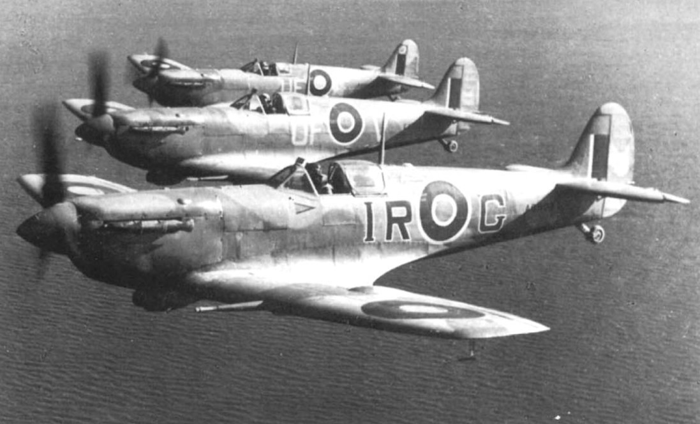 |
| 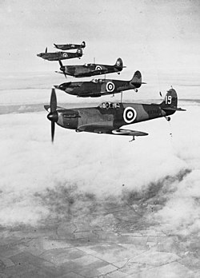 |
| 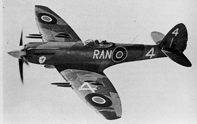 |
| 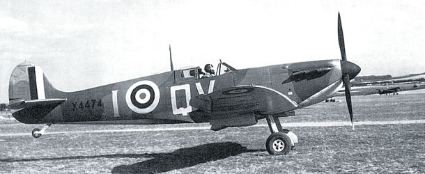 |
| 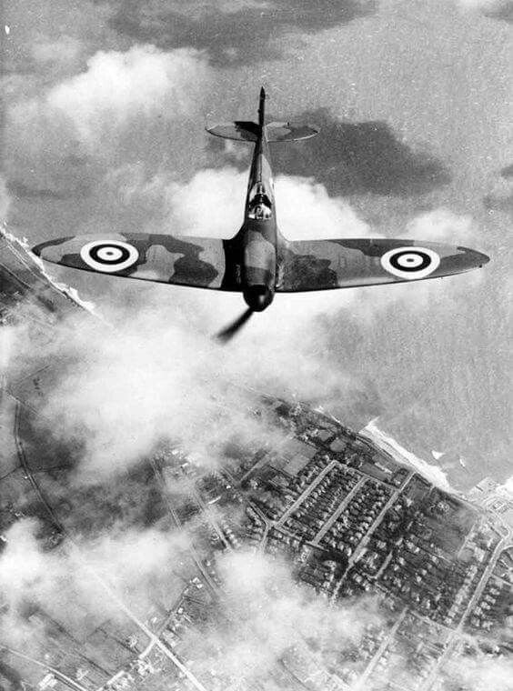 |
| 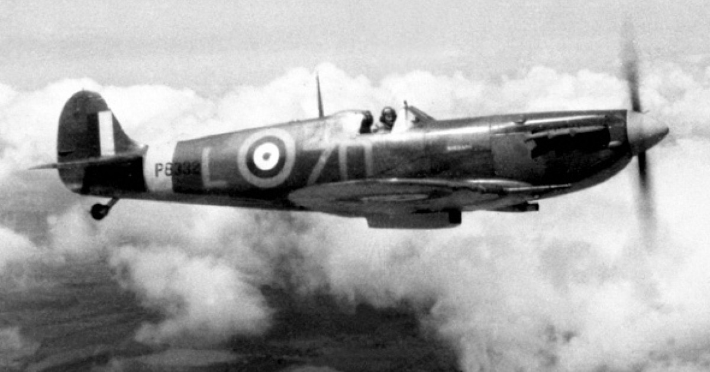 |
| 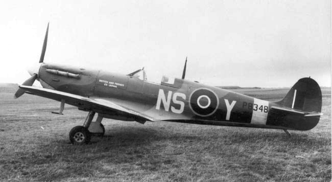 |
| 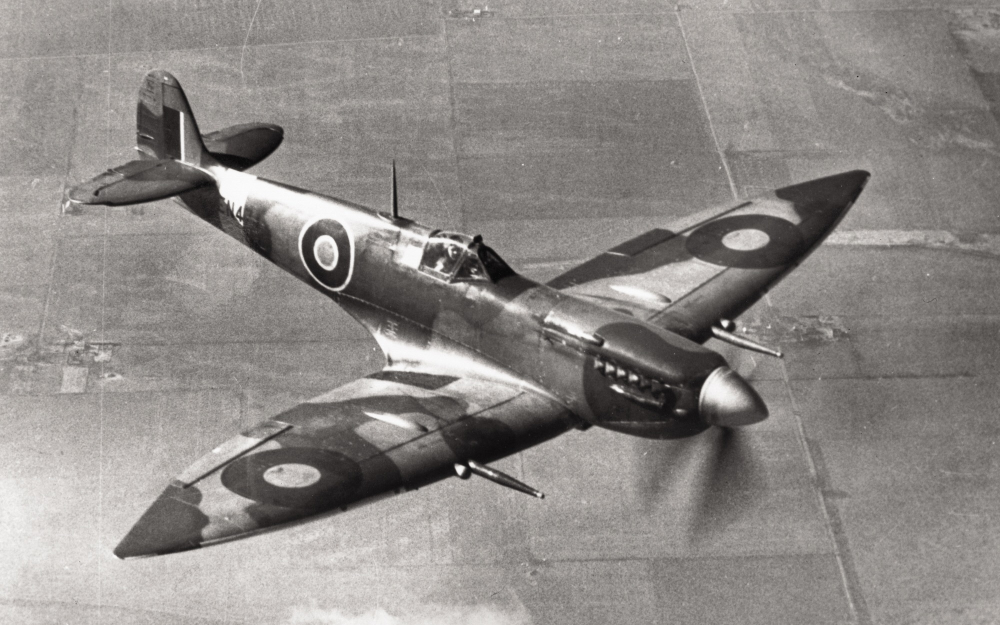 |
| 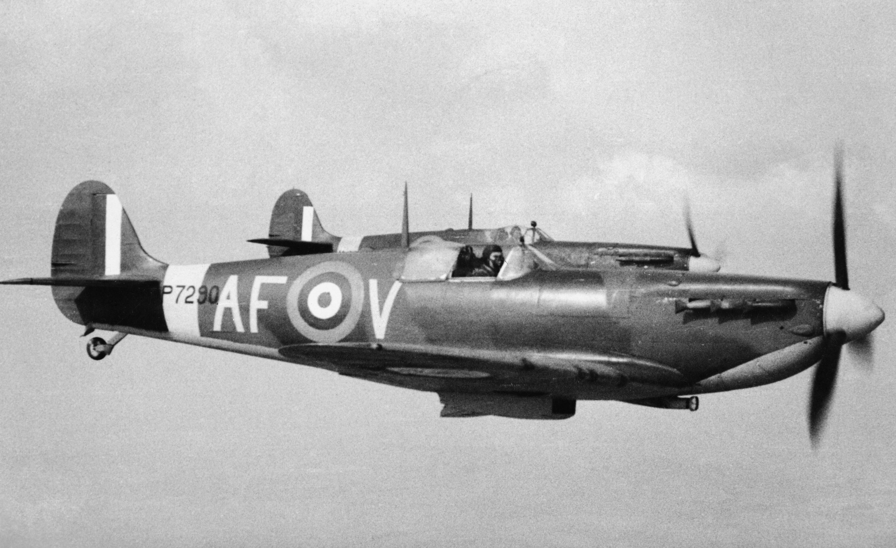 |
| 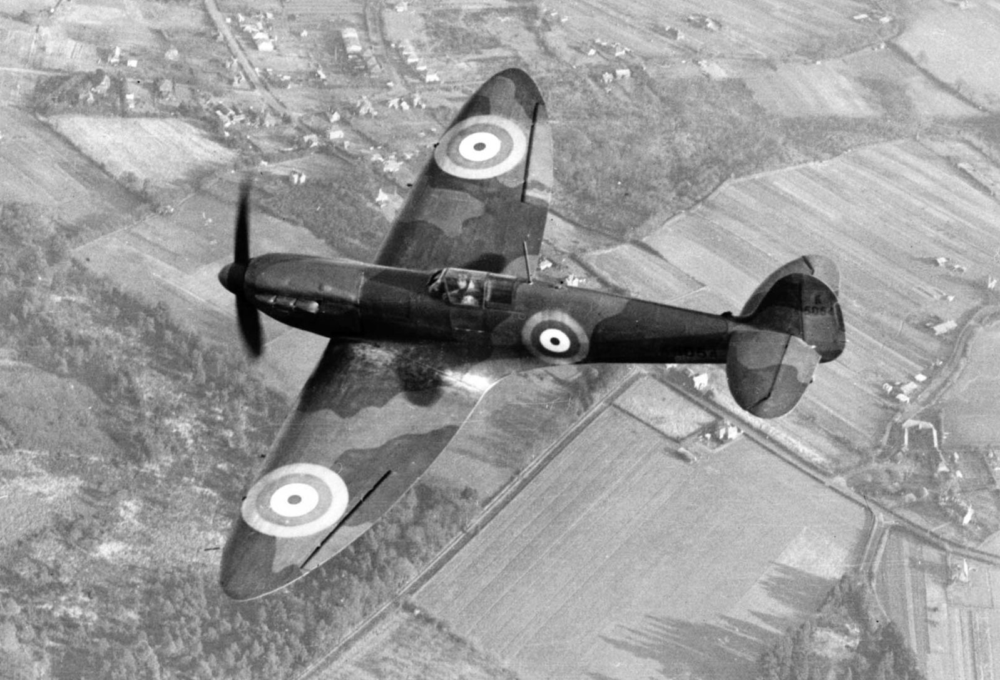 |
| 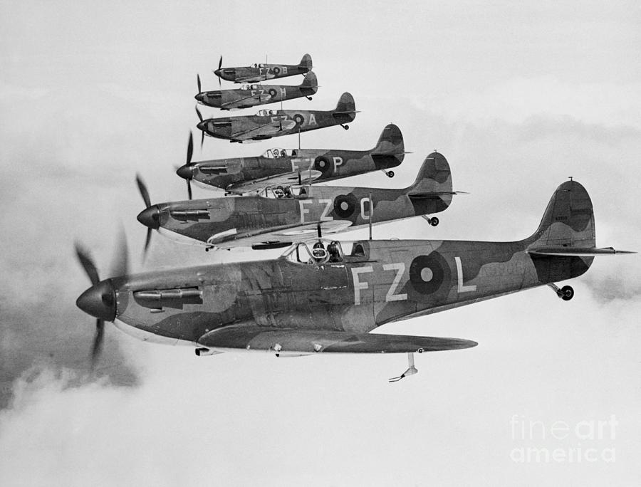 |
| 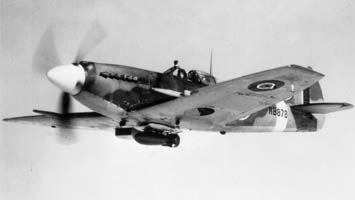 |
| 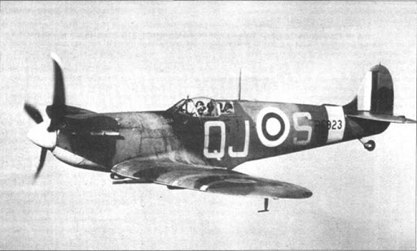 |
| 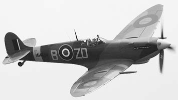 |